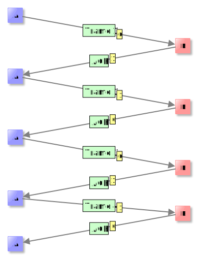
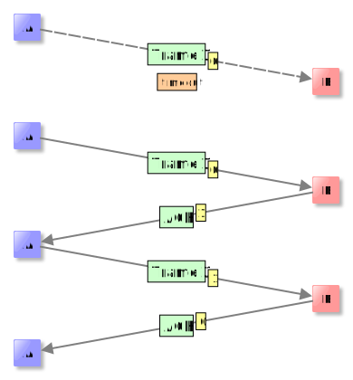
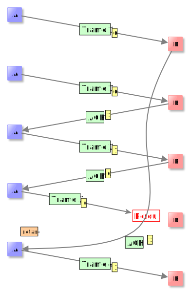
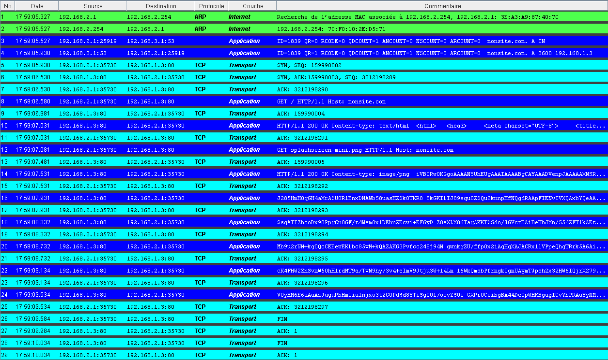
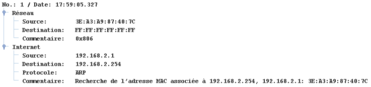

Sécurisation des transmissions⚓︎
Le protocole du bit alterné⚓︎
Nous allons ici voir un modèle de contrôle de perte de données appelé protocole du bit alterné.
Ce protocole a (ou plutôt avait car il a été remplacé par un protocole plus performant) lieu au sein de la couche 2 (couche lien) et permet de vérifier que les trames d'un ordinateur A sont bien reçues par un ordinateur B.

Le principe est très simple, il utilise les acquittements et les flags : lorsque A envoie une trame, il attend un accusé de réception (acquittement, acknowledgment en Anglais) de la part de B dans un temps imparti. À ceci s'ajoute un bit de contrôle, appelé flag en Anglais, qui alterne suivant le modèle suivant:
- la communication commence avec le flag à 0, A envoie une première trame avec le flag;
- B reçoit la trame et accuse réception en envoyant une trame d'acquittement notée ACK. le flag est changé à 1;
- A reçoit ACK avec le flag 1 et envoie donc la deuxième trame avec ce flag 1;
- et ainsi de suite : Lorsque A reçoit une trame de B, elle garde la valeur du flag pour la prochaine trame qu'elle envoie. B, quant à lui change toujours le flag entre le moment où il reçoit et celui ou il émet.
Ce protocole permet d'éviter la perte de trames dans les cas suivants :
Perte de trame du côté de A⚓︎
A envoie la première trame et celle-ci se perd, au bout du temps imparti, B ne reçoit rien.

C'est ce qu'on appelle un timeout en Anglais. A renvoie donc sa trame comme si de rien n'était.
Perte de trame du côté de B⚓︎

A envoie la première trame et celle-ci arrive à B, qui renvoie un ACK avec un flag à 1, et s'attend donc à recevoir une prochaine trame avec un flag à 1. Cette trame ACK se perd. Donc du point de vue de A, il y a timeout et il renvoie la même trame avec le flag à 0. B se rend compte que quelque chose ne va pas, et renvoie donc l'ACK précédent, avec son flag à 1. La communication continue normalement.}
Ce protocole présente des insuffisances comme le montre l'exercice suivant
Exercice : perte d'information
Analyse le schéma suivant et explique pourquoi il y a perte d'information.

Déroulement d'une communication TCP⚓︎
On rappelle que TCP est un protocole de la couche 4 (couche transport) dont les caractéristiques principales sont les suivantes :
- il commence par établir une connexion entre les deux machines;
- il découpe les données en paquets;
- il s'assure de la bonne réception des données au moyen d'\textit{accusés de réception};
- il met fin à la connexion.
L'exercice suivant va nous permettre d'examiner une exemple de communication TCP en détail.
Exercice : une communication TCP en détail
Télécharger ici ou étudier directement les trames. L'ordinateur 192.168.2.1 interroge le serveur DNS situé en 192.168.3.1
afin d'accéder au site monsite.com.
- En mode simulation, faire un clic droit sur 192.168.2.1 et afficher les échanges de données.
- Normalement il n'y a encore eu aucune communication réseau donc la fenêtre d'échange est vide.
Sur le navigateur web installé sur 192.168.2.1, entrer
monsite.comet observer la fenêtre d'échange de données du point de vue de 192.168.2.1 :

On observe 29 trames. Il est possible de cliquer sur chacune d'entre elles pour visualiser son contenu. Voici le contenu de la première :

Il nous indique que 192.168.2.1 essaie de déterminer l'adresse MAC du routeur. En effet, 192.168.2.1 doit interroger
le serveur DNS, situé en 192.168.3.1, pour obtenir l'adresse IP associée à monsite.com, et puisque 192.168.3.1
n'est pas dans le même réseau que 192.168.2.1, celui-ci utilise la passerelle (le routeur).
La trame suivante est la réponse ARP et la communication se poursuit.
- Regarder la source, la destination et le contenu des trames 3 et 4. À quoi correspondent-elles ?
- On s'intéresse au début de la connexion TCP de 192.168.1.2.1 à 192.168.3.1 : ce sont les trames 5,6 et 7, qui constituent ce qu'on appelle en Anglais un Three-way handshake. Rechercher ce terme sur Wikipédia et interpréter ensuite les 3 trames.
- Les trames 8 à 25 constituent l'échange de données en lui-même. Il y a deux grandes étapes. Lesquelles ?
- Que représentent les trames 26 à 29 ? Détailler le procédé.